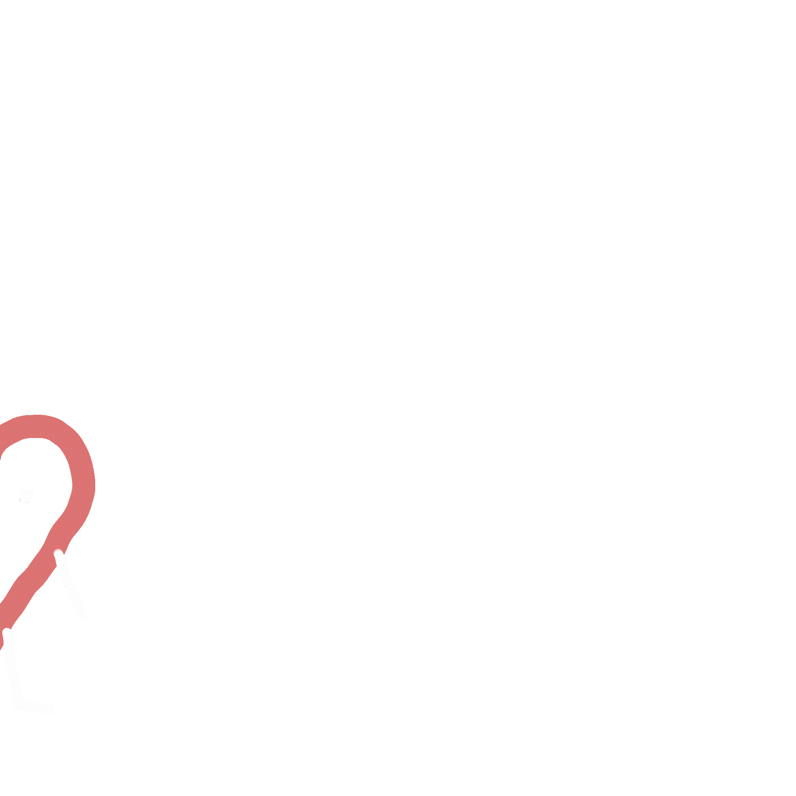

kristy martinez by kristy martinez
I'M PLANNING TO COMPLETELY REDO MY WEBSITE OVER MY FEBRUARY
BREAK SO IF YOU'RE READING THIS, I PROMISE YOU MY WEBSITE ISN'T ALWAYS THIS UGLY
ABOUT ME
♡ hi ٩(＾◡＾)۶ my name is kristy martinez and i'm a high school senior in long island, NY. this website mainly serves as my personal blog where i can express who i am and what i feel to the internet. i have been planning what i want to put onto this website for about 2 years now and right now, i will be taking those plans and trying my best to bring them to life. as i grow as a person in age and maturity, this website will grow as well. even though my love for computer science is relatively new compared to those on the internet, this website will also contain the projects i complete as i go farther in my career. at some points (aka now 2/27/22) this website will be a complete mess, but i like to think it mimics my life ♡

♡ i make most of the gifs and doodles on this website using procreate
:) ♡
♡ update log ♡
1/30/22: i decided to start doing an update log cause i might
have sorta deleted a good portion of what i was working on before by accident--i really
hate how there's no undo tool on repl :( but basically i'm trying to add a starry
night background but everytime i follow a tutorial it never works so please bare with
me
2/2/22: hiii anyone reading this i'm gonna start re-adding the stuff i removed either
today or tomorrow or friday. it will probably look ugly at first, but please bare with
me.
2/27/22: i FINALLY figured out what i was doing wrong with the background stuff after like 2
WEEKS!!!! i am so tired but it looks so pretty now